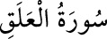

96- el-ALAK SÛRESİ
Alak, insanın yaratılış safhalarından olan aşılanmış yumurtayı ifâde eder. Bu
sûreye «İkra’ sûresi» de denir. Mekke’de inmiştir; 19 âyettir. İlk 5 âyeti, Kur’an’ın
ilk inen âyetleridir. Bu sûrede okumanın, öğrenmenin üstünlüğü, insanın yaratılışı,
kalemin özelliği, bunların insana Allah’ın ihsanı olduğu, insanın bunları
düşünmesi, Rabbine itâat etmesi gerektiği, aksi halde azaba dûçar olacağı anlatılır.